Tornados: mais comuns no Brasil do que parece
Eles existem aqui
Durante muito tempo, o tornado foi tratado como coisa de filme americano. Não é. O Brasil registra tornados todos os anos, principalmente no Sul e em partes do Sudeste e do Centro-Oeste, e pesquisadores o colocam entre os países com mais ocorrências do mundo.
A explicação está na geografia. A leste dos Andes, o terreno é plano e aberto: de um lado chega o ar quente e úmido vindo da Amazônia, do outro avança o ar frio do sul. Quando essas massas se encontram, sobre a região entre Argentina, Paraguai, Uruguai e Sul do Brasil, nascem as supercélulas. É uma das áreas do planeta mais favoráveis a esse fenômeno.
A maioria dos tornados é fraca e dura poucos minutos, por isso muita gente nunca soube que viu um. Mas alguns são devastadores: em 2015, um tornado atingiu Xanxerê (SC) e destruiu parte da cidade.
Como um tornado se forma
- O ar quente e úmido perto do chão, com ar frio e seco acima, cria instabilidade.
- O cisalhamento faz o vento girar como um rolo deitado, na horizontal.
- A corrente ascendente da tempestade levanta esse rolo e o coloca na vertical: nasce o mesociclone.
- Se a rotação se concentra e se estica até o solo, o funil toca o chão e passa a ser um tornado.
Nem todo mesociclone gera um tornado, e é por isso que os meteorologistas acompanham tudo pelo radar. Para entender os termos técnicos, conheça a meteorologia e a ciência de dados.
Os tipos de tornado
Você pode clicar no nome para ver uma foto desse tipo de tornado.
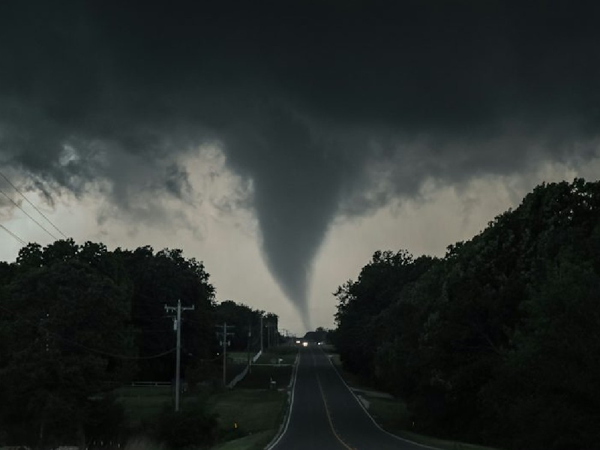
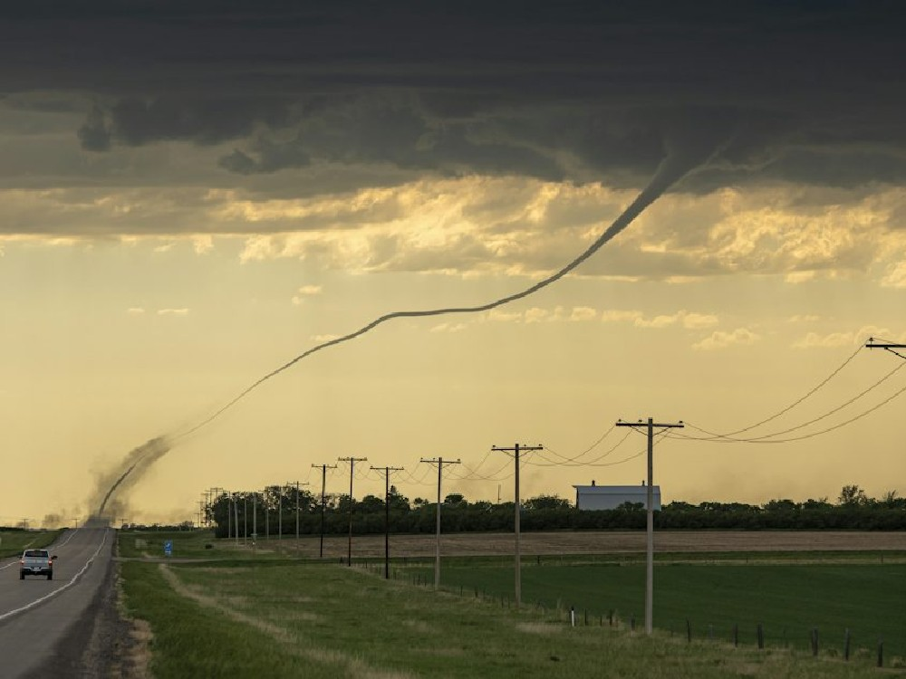
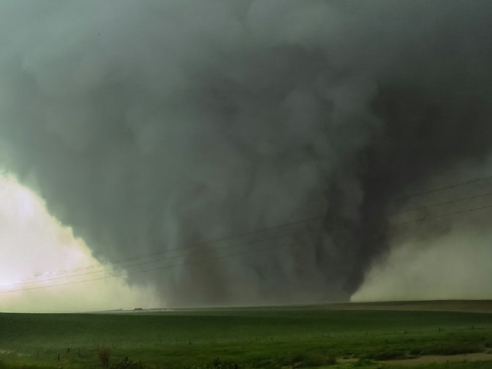
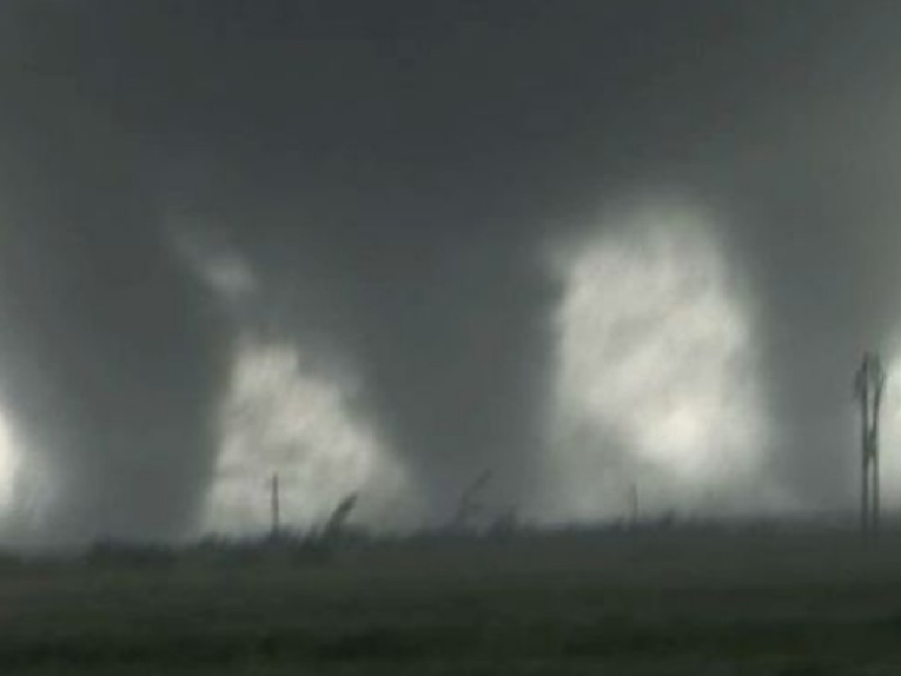
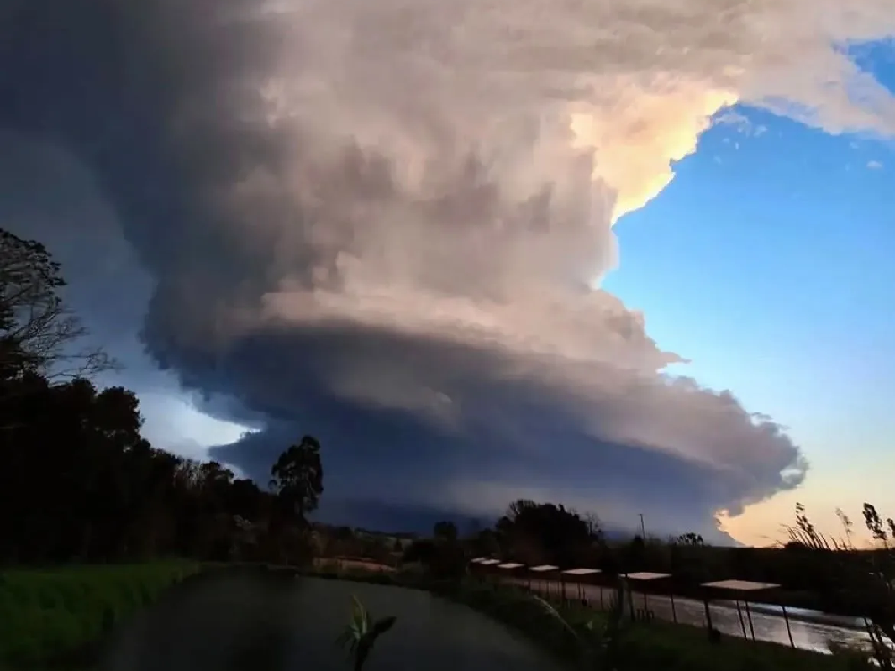
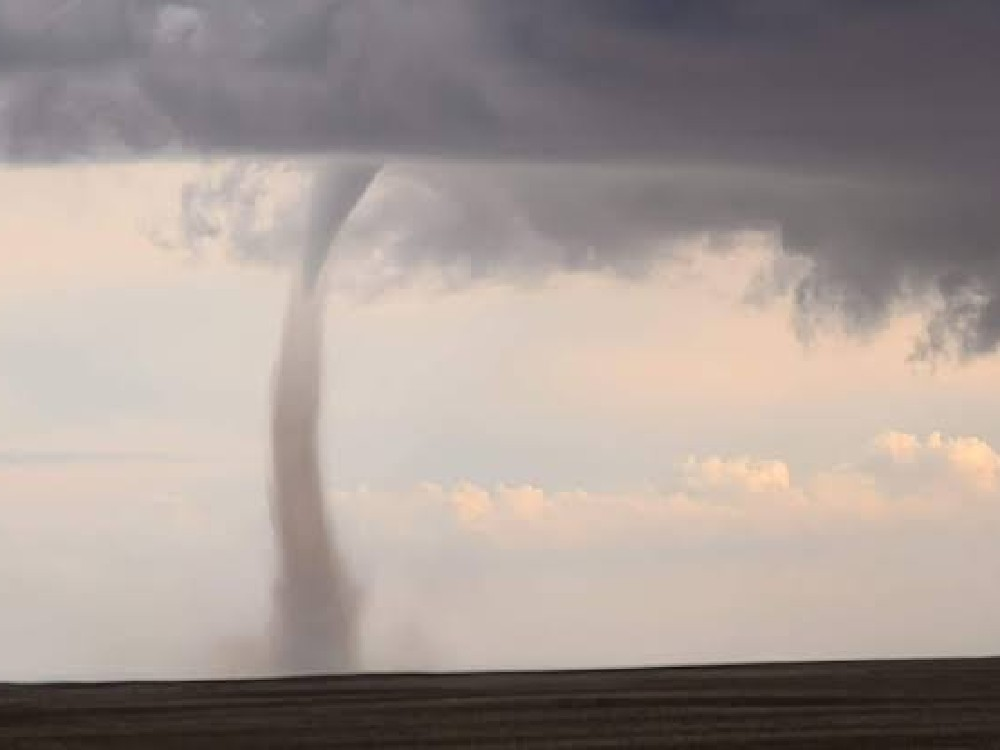
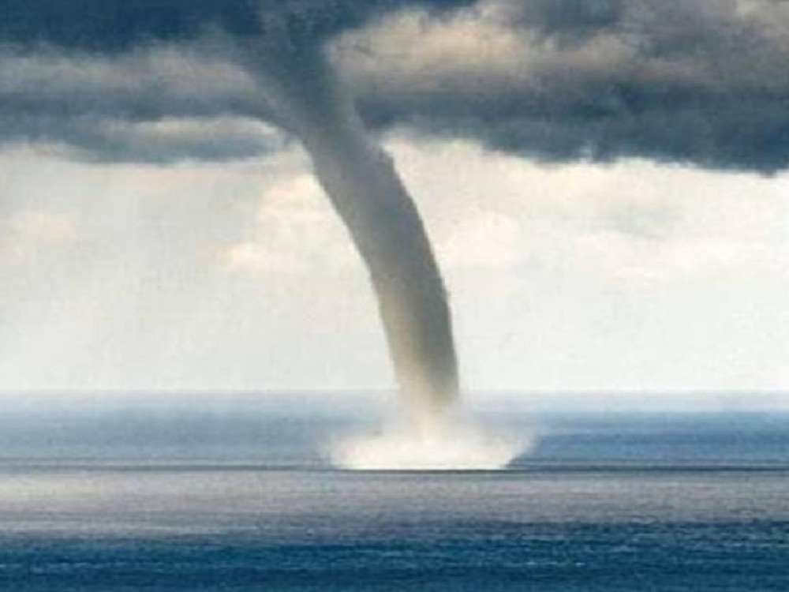
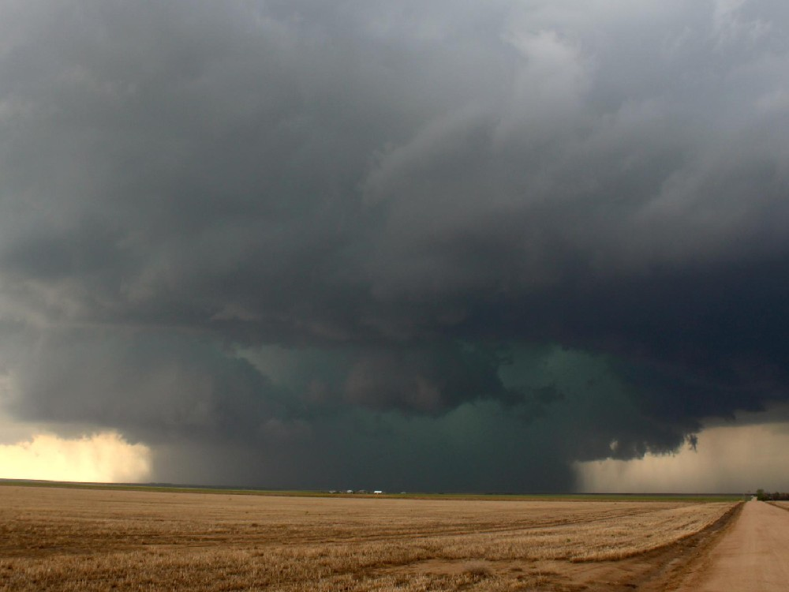
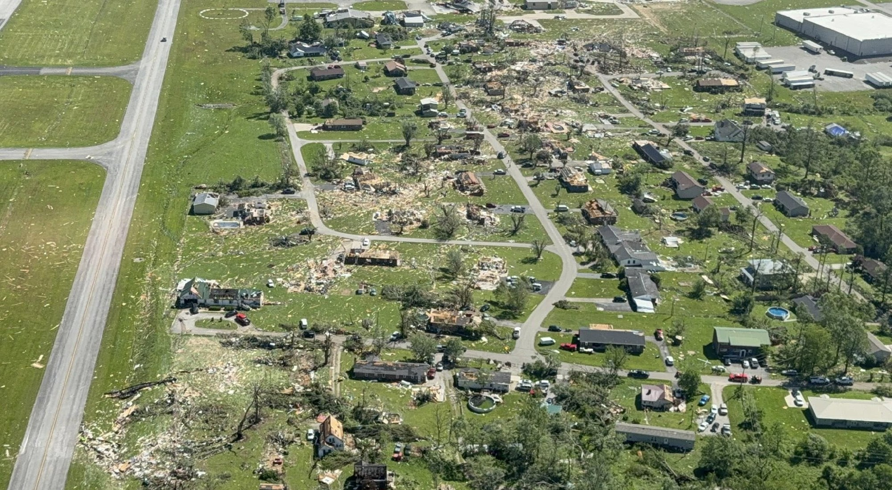
Vendaval e Microburst: os ventos fortes das tempestades
Vendaval é o nome dado ao vento forte o bastante para destelhar casas e derrubar árvores. Quase sempre vem de tempestades e é um dos eventos que mais geram prejuízo por aqui.
Uma das causas é o microburst: o ar frio e pesado da tempestade despenca, bate no chão e se abre em todas as direções. Dura poucos minutos, atinge uma área pequena e o vento pode passar de 100 km/h.
Como saber se foi tornado ou microburst? Basta olhar os destroços. No tornado, eles caem em direções cruzadas, como se puxados para o centro. No microburst, são jogados para fora, em leque, a partir de um ponto.
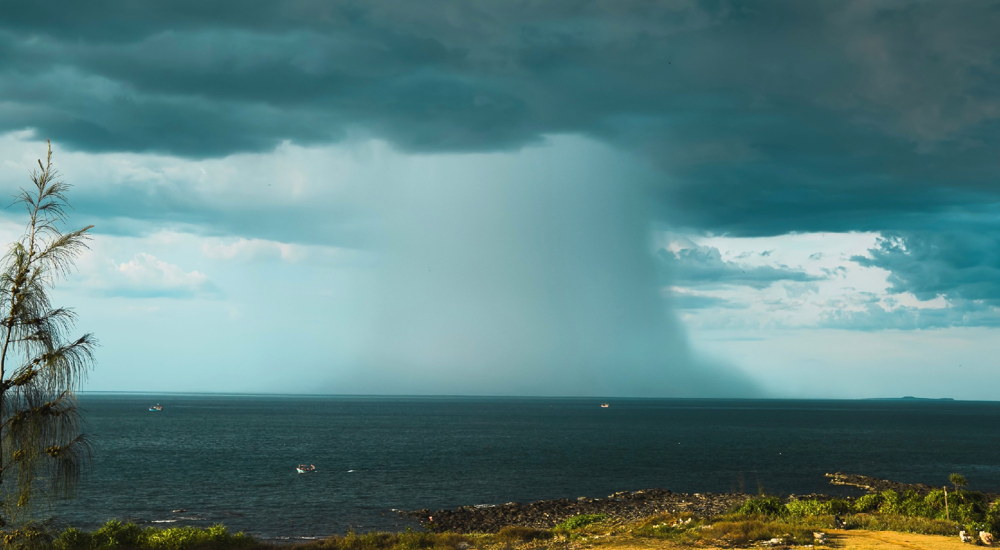
Granizo: pedras de gelo que caem do céu
O granizo nasce dentro de tempestades fortes, onde a corrente ascendente leva gotas de água até altitudes onde elas congelam. A pedra sobe e desce várias vezes, ganha camadas de gelo e cresce até ficar pesada demais para ser sustentada.
Cai com mais frequência no Sul e no Sudeste e causa perdas em lavouras, telhados e carros. O tamanho muda tudo, e comparar com objetos do dia a dia ajuda a entender o impacto.
Passe o mouse ou toque no nome para ver o que cada tamanho pode causar.
- Ervilhacerca de 0,6 cm
- Bolinha de gudecerca de 1,5 cm
- Moeda de 1 realcerca de 2,7 cm
- Bola de golfecerca de 4,5 cm
- Bola de têniscerca de 6,5 cm
- Laranjacerca de 8 cm
- Toranja10 cm ou mais
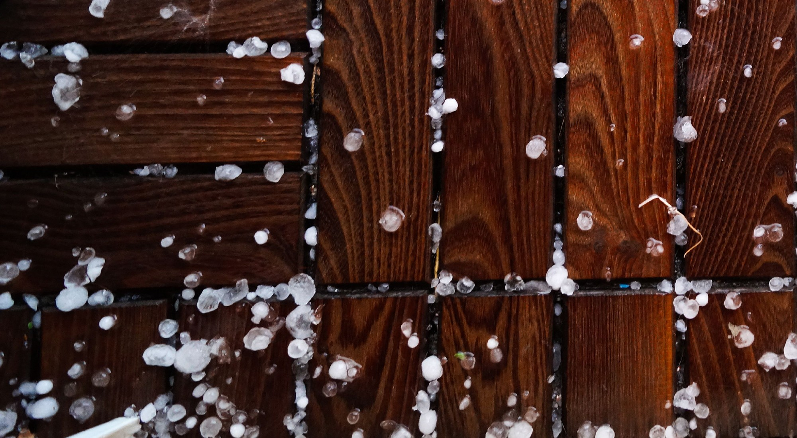
Ciclones e Furacões: a atmosfera em grande escala
O que é um ciclone
Ciclone é um sistema de baixa pressão com ventos girando em torno do centro, no sentido horário no Hemisfério Sul. Enquanto uma tempestade tem alguns quilômetros, um ciclone tem centenas ou milhares.
Há dois grandes tipos. O tropical nasce sobre oceanos quentes, ganha energia do calor do mar e tem um olho calmo no centro. O extratropical nasce do contraste entre ar frio e ar quente, em latitudes mais altas, e é o mais comum no Sul do Brasil. Quando se intensifica muito rápido, passa pela ciclogênese explosiva.
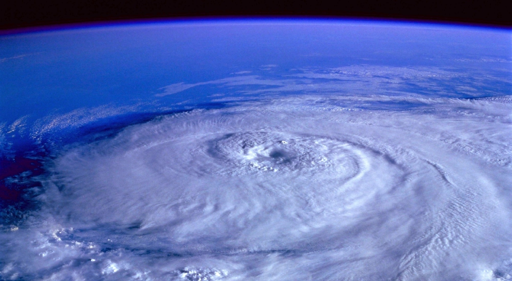
Furacão, tufão ou ciclone: é a mesma coisa?
No caso dos ciclones tropicais, sim: é o mesmo fenômeno com nomes diferentes. O nome muda conforme a região: furacão no Atlântico e no Pacífico Nordeste, tufão no Pacífico Noroeste e ciclone no Índico e no Pacífico Sul. A força é medida pela escala Saffir-Simpson.
Casos que ficaram na história
Catarina (2004)
Atingiu o litoral de Santa Catarina com ventos de furacão. Foi raríssimo, porque o Atlântico Sul quase não forma furacões.
Katrina (2005)
Atingiu Nova Orleans, nos EUA, e causou uma das maiores tragédias do país, em grande parte pelas inundações.
Haiyan (2013)
Um dos tufões mais fortes já registrados ao tocar a terra, devastou regiões das Filipinas.
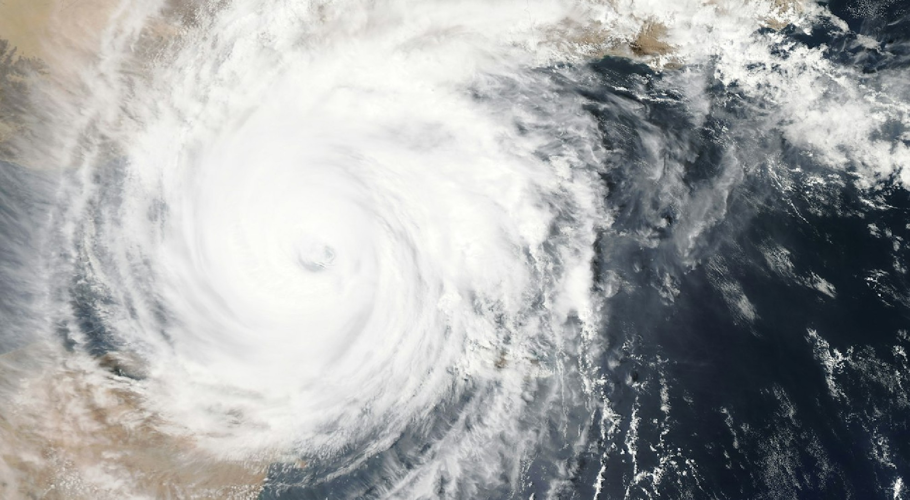
Como se proteger
Entender os eventos severos é o primeiro passo para estar preparado. Estas são orientações gerais; siga sempre as recomendações da Defesa Civil da sua cidade.
Tornado
Procure abrigo em construção resistente, no andar mais baixo, em um cômodo interno e sem janelas. Evite carros, casas móveis e viadutos.
Vendaval
Fique longe de árvores, postes e fios. Não se abrigue sob estruturas frágeis, como galpões e toldos.
Granizo
Entre em local coberto e afaste-se de janelas e claraboias. Proteja o carro em garagem.
Ciclone
Acompanhe os alertas, evite o litoral e fuja de áreas sujeitas a alagamento e deslizamento.
Defesa Civil: 199 · Bombeiros: 193 · Alerta por SMS: 40199